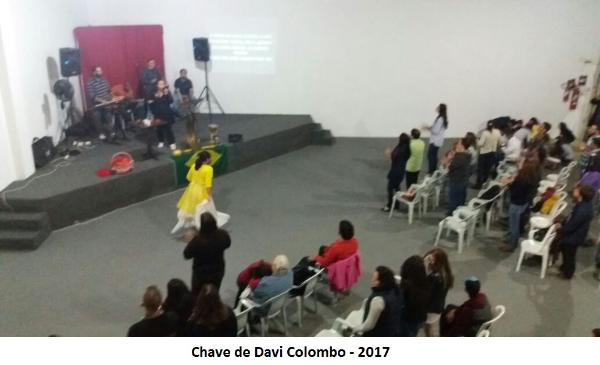

História
Separados por Deus desde a eternidade e consagrados em 2005 para o ministério pastoral, Dejair e sua esposa Edineia, tiveram suas vidas totalmente dedicadas ao chamado e ao Reino de Deus desde o novo nascimento em Cristo.
Em sua caminhada, ambos entenderam seu lugar no corpo de Cristo como Guerreiros de Intercessão.
Sempre comprometidos com o Reino e com a igreja local, tiveram a confirmação do chamado pastoral na Comunidade Cristã Chave de Davi em Curitiba pelo Apóstolo Glauro e Profetiza Débora Janeth no ano de 2008, sendo após isto, enviados para estabelecer uma congregação filial da Comunidade Crista Chave de Davi, em Colombo.
Nasce, então, em setembro de 2008, na cidade de Colombo–PR, a COMUNIDADE CRISTÃ CHAVE DE DAVI COLOMBO, ou o embrião desta.
Com um pequeno grupo de oração, onde se reuniam 5 pessoas na casa dos Pastores Dejair e Edineia, iniciou-se a comunidade. Um embrião que começava a tomar forma.
Depois de seis meses como Grupo Familiar, em fevereiro de 2009, seguindo direção apostólica, foi realizado o primeiro Culto.
Com muita dedicação e amor, regando sempre com muita oração e adoração, vidas foram sendo alcançadas, libertas e restauradas. Com isso surge a necessidade de outras salas para atender a demanda. Assim, vem a conquista de uma casa com várias repartições para ministrar às crianças durante os cultos, além de atendimentos diários.
No final de 2010, o local já não comportava as pessoas, sendo, então, necessário o início de um “ampliar de tendas”, aumentando o lugar das reuniões com uma pequena reforma. E a graça de Deus mais uma vez os alcançou, concluindo a reforma, o templo foi ampliado.
Começamos o ano de 2011 de cara nova. Agora com espaço de reunião para 50 pessoas além das demais dependências. Porém a igreja continuava junto a casa dos pastores, permanecendo assim durante 3 anos. Foram momentos preciosos de grande comunhão, crescimento, revelação e muitas manifestações do amor e poder de Deus.
Em fevereiro de 2015, fez-se necessário a mudança de endereço. A Comunidade é estabelecida no Bairro do Roça Grande, Rua Gustavo Nass 38, onde está localizada até hoje. Um lugar preparado por Deus, de fácil acesso, tanto para quem vem de ônibus, quanto para quem vem de carro.
Aqui, temos sido abençoados e também seguimos abençoando a Cidade de Colombo com nossos cultos realizados todos os domingos às 18h, além de períodos de adoração, intercessão, treinamentos, seminários, atendimento a comunidade local, etc. Assim seguimos adorando a Jesus, servindo a Deus, e as pessoas, até ver toda Cidade de Colombo rendida ao SENHORIO DE CRISTO, pois Ele É.
Pastores
Pr. Dejair
Recebeu nomeação pastoral em abril de 2005 e passou a atuar no ministério integral em 2006. Cursou dois anos de Teologia pelo I.T.Q, e atualmente (2017), está cursando Teologia pela Facel. Fez três anos de Escola de Profetas pela Igreja Apostólica Renascer em Cristo. Concluiu o S.I.M. (Seminário de Integração Ministerial) pelo Chave de Davi em 2014 e hoje leciona como professor de Batalha Espiritual níveis 1,2 e 3 na mesma.
Teve o ministério pastoral confirmado em abril de 2009 pelo Apóstolo Glauro e Profetiza Débora Janeth, na Comunidade Cristã Chave de Davi de Curitiba, local onde foi ungido, separado e dali enviado.
Atua na área de intercessão e batalha espiritual. É hoje pastor sênior de uma base da Comunidade Cristã Chave de Davi em Colombo, juntamente com sua esposa, Edineia, com quem é casado há 22 anos.
Pra. Edineia
Atua no ministério integral desde 2004. Recebeu nomeação pastoral em 2005.
Bacharel em Teologia pela Faculdade Evangélica do Paraná.
Concluiu os três anos do S.I.M. (Seminário de Integração Ministerial) em 2005, e hoje leciona como professora de Dons Espirituais, Oração e Intercessão e Ministério Profético. Teve seu ministério confirmado em setembro de 2008, pelo Apóstolo Glauro e Profetiza Débora Janeth na Comunidade Cristã Chave de Davi de Curitiba; local onde foi ungida juntamente com seu esposo.
Atua na área de intercessão profética, batalha espiritual e libertação, pastoreando junto com seu esposo, Pr. Dejair, na Comunidade Cristã Chave de Davi em Colombo.